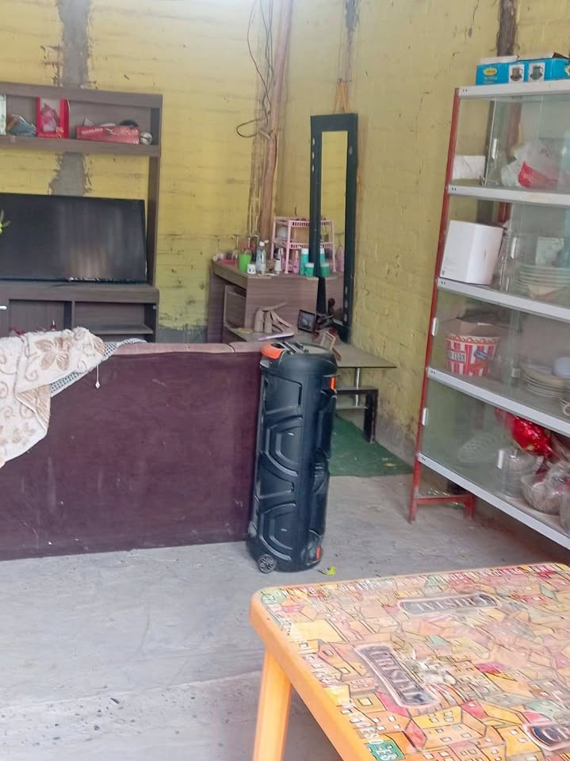

Precio desconocido

El terreno está ubicado frente a parque en el A.H. Nuevo Amanecer 26 Octubre Piura a 5 minutos de la universidad César Vallejo, hospital Santa Rosa,Tottus, etc con afluencia de transporte público que pasan por todas las universidades mercado, centro de Piura y Castilla. Luz, Agua,Gas natural . Constancia de posesión de la municipalidad de Piura PRECIO: 85 mil soles Precio negociable LLAMAR: [hidden information]